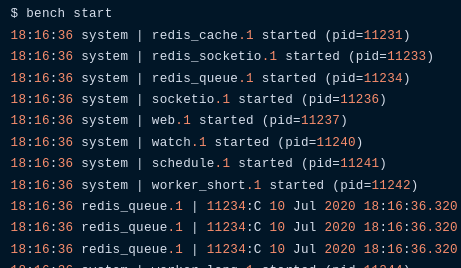
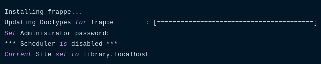
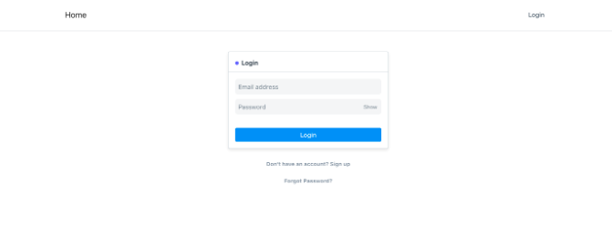
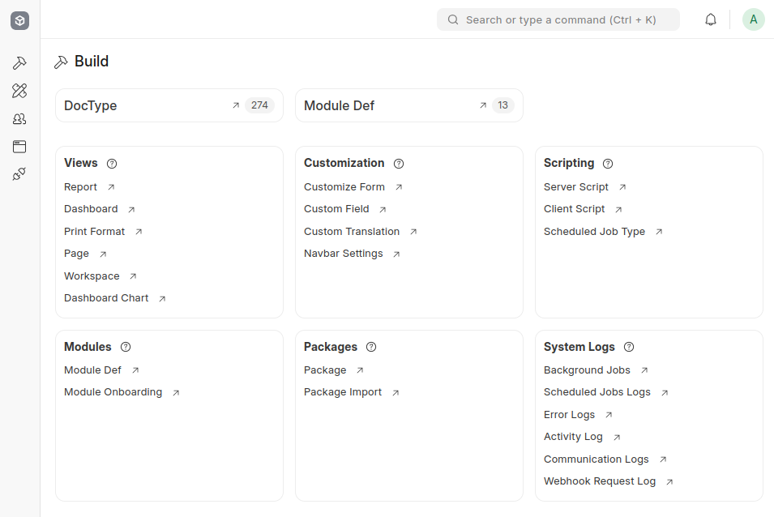
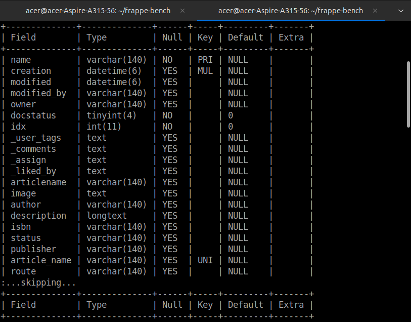
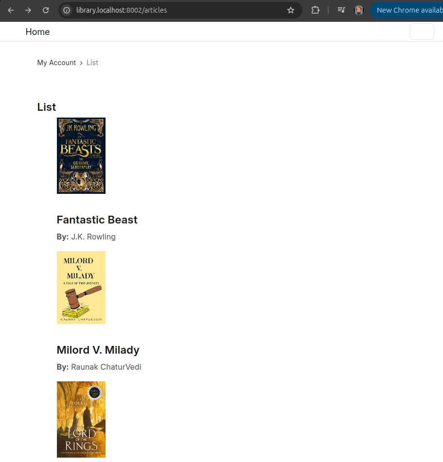

Contents
- What is Frappe
- Installation
- Requirements
- Doctype
- Library Management System
Frappe
Frappe Framework is a full-stack, open-source web application framework primarily written in Python and JavaScript, designed to build database-driven applications with a low-code approach, where developers can create complex web applications with minimal coding by utilizing its built-in features and configuration options; it is most notably known for powering the ERPNext software.
Why Frappe?
The key difference in Frappe compared to other frameworks is that meta-data is also treated as data. This enables you to build front-ends very easily. We believe in a monolithic architecture, so Frappe comes with almost everything you need to build a modern web application. It has a full featured Admin UI called the Desk that handles forms, navigation, lists, menus, permissions, file attachment and much more out of the box.
Key points about Frappe Framework
- Full-stack: Includes both front-end and back-end components, allowing developers to build complete web applications within the framework.
- Low-code approach: Emphasizes configuration over coding, enabling rapid development by defining application structure through metadata rather than writing extensive code.
- Database: Primarily uses MariaDB as the database backend.
- ERPNext integration: Frappe Framework is the foundation for the popular open-source ERP software, ERPNext.
Installation in Linux OS
- MariaDB
- Python 3.10/11/12
- Node 18 or 20
- Redis 6 (caching and realtime updates)
- Yarn 1.12+ (js dependency manager)
- Pip 20+ (py dependency)
- wkhtmltopdf (for pdf generation)
- cron
Steps
Open Terminal
$ sudo apt updateInstall git python and redis
$ sudo apt install git python-is-python3 python3-dev python3-pip redis-serverInstall MariaDB
$ sudo apt install mariadb-server mariadb-client.What if you not getting prompt?
Run this thenRemember: only run it if you're not prompted the password during setup. $ mariadb-secure-installation
Install Node
It would be better if installing node using nvm $ curl -o- https://raw.githubusercontent.com/nvm-sh/nvm/v0.40.1/install.sh | bash $ nvm install 18Install yarn using npm
$ npm install -g yarnInstall wkhtmltopdf
$ sudo apt install xvfb libfontconfig Download and install wkhtmltopdf package from https://wkhtmltopdf.org/downloads.html then run this command to install the package.$ sudo dpkg -i wkhtmltox_file.deb
Install Bench CLI
Install bench via pip3
$ pip install frappe-bench Depending on your OS version and python/pip version, you may get an error here regarding an externally-managed-environment You can work around this for now by running or use virtualenv $ pip install frappe-bench --break-system-packagesCreate Your first bench
$ cd~$ bench init frappe-bench
Requirements
Software
- Python
- MariaDB or PostgreSQL
- JavaScript
- JQuery
- Git
- Github
Hardware
A laptop or desktop with at least 4GB of RAM and a dual core CPUOperating System
A unix-based operating system like Linux or Mac OSNeed to learn
- HTML and CSS
- JavaScript and JQuery
- Jinja Templating
- Git and Github
DocType
A DocType is the core building block of any application based on the Frappe Framework. It describes the Model and the View of your data. It contains what fields are stored for your data, and how they behave with each other. It contains information about how your data is named. The forms like Sales Order, Sales Invoices, Work Order are added as DocTypes in the backend. DocType allows you to insert custom forms in ERPNext as per your requirement. To create a new DocType, go to: Setup > Customize > Doctype > NewHow to create a New DocType
1. Name: Enter the name of the new DocType.2. Module: Enter which module would you like the new
3. DocType to be added to.
Save.
Fields
Permission rules
You can define the Permission Rules for the DocType here, and configure which users would be able to use or make changes to this DocType.Library Management System
1. Create the frappe-bench directorybench init frappe-bench This will create a directory named frappe-bench in your current working directory. It will do the following:
1. Create a python virtual environment under env directory. 2. Fetch and install the frappe app as a python package.
3. Install node modules of frappe. Build static assets.
Start Bench Server
cd frappe-bench bench start
Create App
Create our Library Management appbench new-app library_management
App Description: This is Library Management System
App Publisher: Sukhpreet Singh
App Email: sukh.singh@gmail.com
App Icon (default 'octicon octicon-file-directory'):
App Color (default 'grey'):
App License (default 'MIT'):
App directory structure
apps/library_management
├── README.md
├── library_management
│ ├── hooks.py
│ ├── library_management
│ │ └── __init__.py
│ ├── modules.txt
│ ├── patches.txt
│ ├── public
│ │ ├── css
│ │ └── js
│ ├── templates
│ │ ├── __init__.py
│ │ ├── includes
│ │ └── pages
│ │ └── __init__.py
│ └── www
└── pyproject.toml
Explaination
library_management: This directory will contain all the source
code for your app
public: Store static files that will be served from Nginx in
production
templates: Jinja templates used to render web views
www: Web pages that are served based on their directory path
library_management: Default Module bootstrapped with app
modules.txt: List of modules defined in the app
patches.txt: Patch entries for database migrations
hooks.py: Hooks used to extend or intercept standard functionality
provided by the framework
pyproject.toml: Specifies how your app is built, you can
optionally add 3rd party Python dependencies here which will get
installed when your app is installed.
Create a Site
bench new-site library.localhostMySQL root password:

Now, you will have a new folder named library.localhost in the sites directory.
Site Directory Structure
sites/library.localhost
├── indexes
│ └── web_routes
├── locks
├── logs
├── private
│ ├── backups
│ └── files
├── public
│ └── files
└── site_config.json
Access site in your browser
bench allows you to create multiple sites and access them separately in the browser on the same port. This is what we call multi-tenancy support in bench.Frappe will identify which site to serve by matching the hostname of the request with the site name, so you should be able to access your site on http://library.localhost:8000
If this does not work for you it's because we have to tell our operating system that library.localhost should point to localhost. To do that, you can add the following entry to your /etc/hosts file.
127.0.0.1 library.localhost
$ bench --site library.localhost add-to-hosts
Open Browser
Write: http://localhost:8000/#login
Now You can access your site http://library.localhost:8000
Install app on site
$ bench --site library.localhost install-app library_management Installing library_management... To confirm if the app was installed $ bench --site library.localhost list-appsYou should see:
frappe
library_management
Login to desk
Create a DocType
Before we can create DocTypes, we need to enable developer mode on our bench. This will enable boilerplate creation when we create doctypes and we can track them into version control with our app. $ bench set-config -g developer_mode true$ bench start Click on DocType List and create a new DocType with name of Article The first doctype we will create is Article. To create it, click on New.
Enter Name as Article
Select Library Management in Module
Add the following fields in the Fields table:
Article Name (Data, Mandatory)
Image (Attach Image)
Author (Data)
Description (Text Editor)
ISBN (Data)
Status (Select) - Enter two options: Issued and Available (Type Issued, hit enter, then type Available)
Publisher (Data)
Database Table
$ bench --site library.localhost mariadbWelcome to the MariaDB monitor. Commands end with ; or \g.
Your MariaDB connection id is 2445938
Server version: 10.4.13-MariaDB Homebrew
Copyright (c) 2000, 2018, Oracle, MariaDB Corporation Ab and others.
Type 'help;' or '\h' for help. Type '\c' to clear the
current input statement. MariaDB [_ad03fa1a016ca1c4]> desc tabArticle;
View in Mariadb
Multiple DocTypes
Library MemberFirst Name (Data, Mandatory) Last Name (Data)
Full Name (Data, Read Only)
Email Address (Data)
Phone (Data)
Library Membership
Library Member (Link, Mandatory)
Full Name (Data, Read Only)
From Date (Date)
To Date (Date)
Paid (Check)
Web view Pages
Enable Has Web View and Allow Guest to ViewEnter articles in the Route field
Add fields named Route and Published in the fields table
Click on Save


Customize Web View Template
The default web view that is generated is pretty barebones and serves only as a starting point for us to customize it. When we made Article a web view, two HTML files were created namely: article.html and article_row.html article.html{% extends "templates/web.html" %}
{% block page_content %}

{{ title }}
===========
By {{ author }}
{%- if status == 'Available' -%}
Available
{%- elif status == 'Issued' -%}
Issued
{%- endif -%}
Publisher: **{{ publisher }}**
ISBN: **{{ isbn }}**
{{ description }}
{% endblock %}
List of Books
article\_row.html
[{{ doc.name }}]({{ doc.route }})
By {{ doc.author }}
